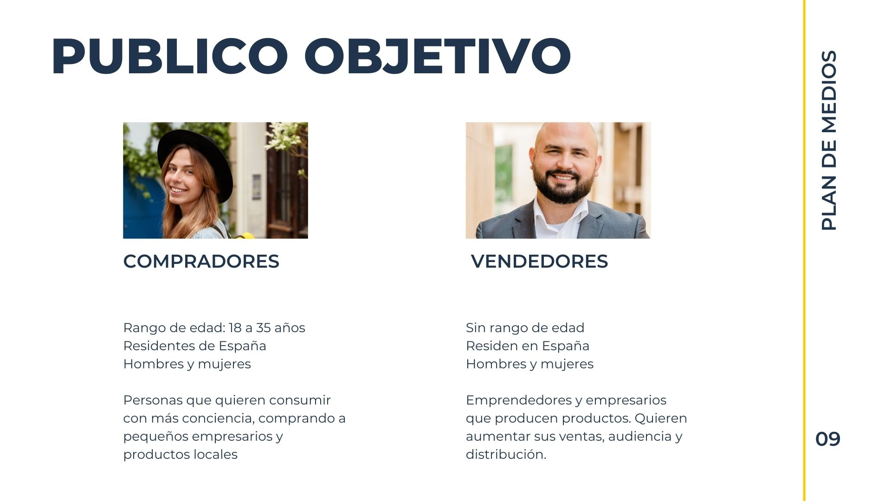
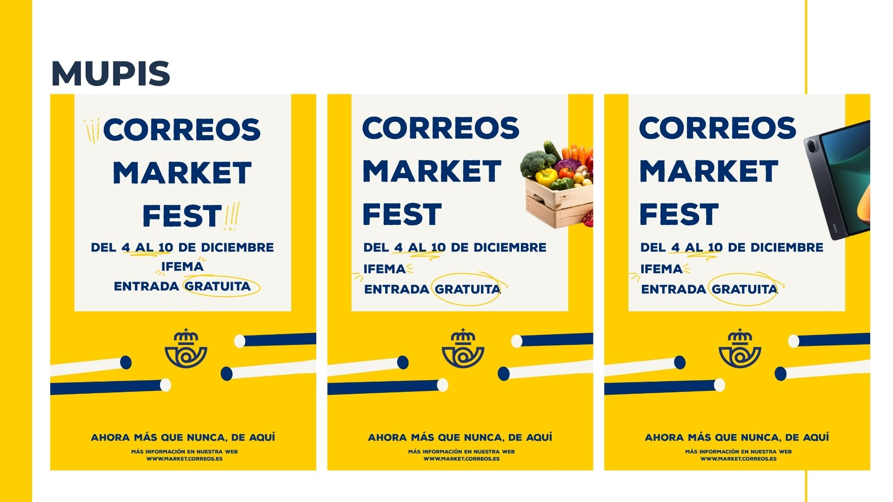
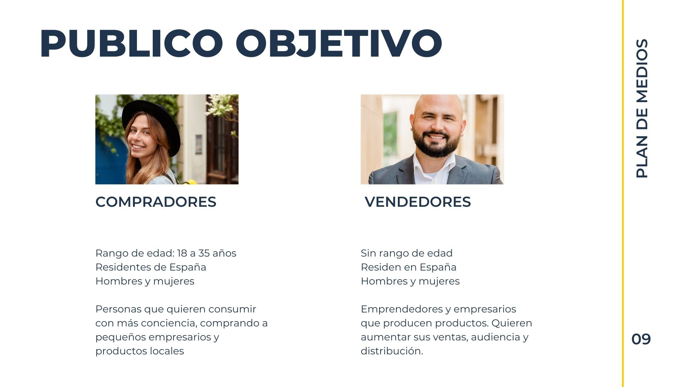
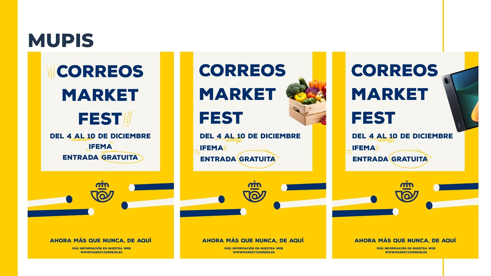

El Reto: Conectar con la Generación Z
El desafío principal consistía en rejuvenecer la percepción de Correos Market. Diseñamos una estrategia centrada en la autenticidad, apoyándonos en patrocinios de podcasts de éxito como Nude Project para llegar donde el público joven consume contenido de forma orgánica.
"Llegar donde están los jóvenes"
Una estrategia 360º que combina la potencia de los Social Ads con la cercanía del audio digital y la visibilidad de los mupis en puntos estratégicos.
 


